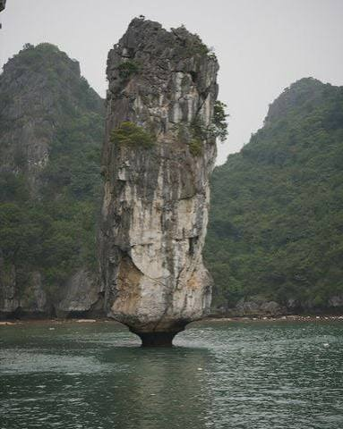

Chào mừng đến với Vịnh Hạ Long
Vịnh Hạ Long là danh lam thắng cảnh nổi tiếng của Việt Nam, thuộc tỉnh Quảng Ninh. Nơi đây có vẻ đẹp thiên nhiên kỳ vĩ, làn nước xanh biếc và hàng nghìn hòn đảo đá vôi độc đáo.
Vịnh Hạ Long nổi bật với những hang động tuyệt đẹp, các hòn đảo có hình dáng đặc biệt và phong cảnh hữu tình. Đây là điểm đến hấp dẫn đối với du khách trong nước và quốc tế, đồng thời là Di sản thiên nhiên thế giới được UNESCO công nhận.

Các địa điểm nổi bật tại Vịnh Hạ Long
| STT | Địa điểm | Đặc điểm nổi bật |
|---|---|---|
| 1 | Hang Sửng Sốt | Hang động rộng lớn với nhiều khối thạch nhũ đẹp |
| 2 | Đảo Titop | Có bãi tắm đẹp và điểm ngắm toàn cảnh vịnh |
| 3 | Hang Đầu Gỗ | Nổi bật với cảnh quan hang động độc đáo |
| 4 | Hòn Trống Mái | Biểu tượng nổi tiếng của Vịnh Hạ Long |